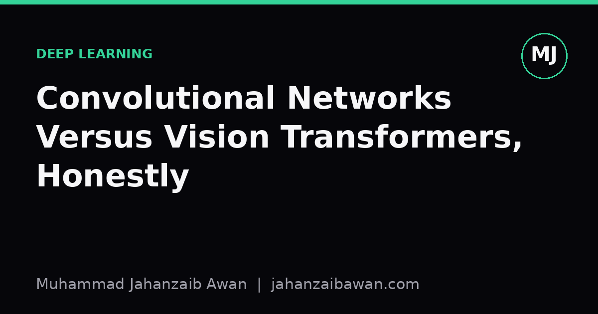
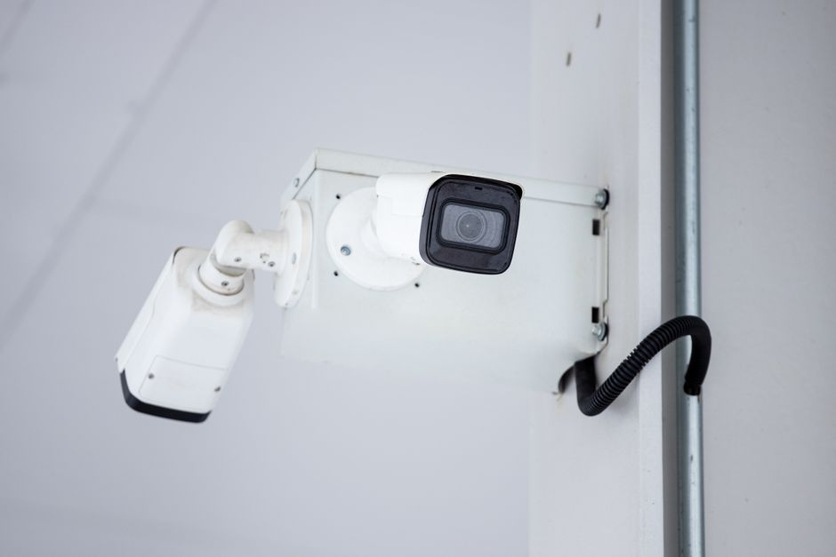

Convolutional Networks Versus Vision Transformers, Honestly
Both architectures can solve the same image problems, but they get there differently. Here is how I think about choosing between them without falling for hype.

Why this comparison keeps coming up
Every few months someone asks me whether they should just use a vision transformer instead of a convolutional network for their image project, as if the answer were a settled fact rather than a design decision. The honest answer is that both architectures are excellent, they simply encode different assumptions about what images look like, and those assumptions matter more when your dataset is small, your compute is limited, or your test distribution differs from training. Treating this as a fashion choice rather than an engineering one is how projects quietly underperform.
A convolutional network is built around a strong prior: nearby pixels are related, and the same local pattern, an edge, a corner, a texture, can appear anywhere in the image. Convolution enforces this by sliding small filters across the whole image, sharing weights, and stacking layers so that receptive fields grow gradually from small patches to large regions. This is called an inductive bias, and it is not a limitation, it is a shortcut. The network does not need to learn from scratch that a cat's ear looks the same in the top left corner as in the bottom right, the architecture already assumes it.
A vision transformer, by contrast, starts with almost no assumptions about spatial structure. It slices an image into fixed-size patches, treats each patch as a token, and lets self-attention learn which patches relate to which. There is no built-in notion that neighbouring patches are more relevant than distant ones; the model must discover that from data, aided only by a positional encoding that tells it where each patch sits. This flexibility is powerful once the model has seen enough examples to learn useful patterns, but it means the model starts from a much weaker prior.
A worked intuition with realistic numbers
Imagine two teams training an image classifier on ten thousand labelled photographs, a modest but not tiny dataset, split with proper care so that no photograph or near-duplicate leaks between train and test. Team A trains a well-tuned convolutional network of a common architecture family. Team B trains a vision transformer of comparable parameter count from scratch, with no pretraining.
In my experience the convolutional network reaches usable accuracy, say somewhere in the high eighties percent on a moderately difficult multi-class task, within a reasonable training budget, because its built-in assumptions about locality and translation invariance mean it needs fewer examples to find sensible filters. The transformer trained from scratch on the same ten thousand images typically lags behind, sometimes by a wide margin, because it has to learn spatial relationships that the convolutional network gets for free. Self-attention over patches can, in principle, discover something equivalent to locality, but doing so from limited data is inefficient; the model spends capacity relearning what convolution assumes structurally.
The picture changes completely if either model is pretrained on a much larger dataset first and then fine-tuned on the ten thousand images. A vision transformer pretrained at scale often matches or exceeds a comparable convolutional network after fine-tuning, because pretraining is exactly what supplies the spatial understanding that the architecture lacks by default. This is the crucial, often glossed-over detail in papers reporting transformer superiority: the comparison is rarely fair unless both models see similar amounts of pretraining data, and the transformer's advantage frequently traces back to scale rather than architecture alone.
So the practical lesson from this worked example is not that one architecture is better, it is that the two architectures have different appetites for data, and matching the architecture to the data budget you actually have is more important than following a leaderboard.

Robustness, compute, and other things that matter in practice
Accuracy on a clean held-out test set is only part of the story. Convolutional networks tend to be more robust to small spatial shifts and local corruptions, because their weight sharing and pooling operations build in a degree of tolerance to exactly those perturbations. Vision transformers, especially smaller ones trained without heavy pretraining, can be more sensitive to patch-level noise or occlusion, since a corrupted patch is just another token competing for attention rather than something a local filter can smooth over. If your deployment environment involves camera shake, partial occlusion, or inconsistent framing, this is worth testing explicitly rather than assuming it away.
Compute behaviour also differs in ways that affect real deployment decisions. Convolutional networks scale reasonably with image resolution because computation grows with the number of pixels processed by local filters. Self-attention, in its plain form, scales quadratically with the number of patches, so doubling image resolution can be considerably more expensive for a transformer than for a convolutional network of similar depth. Efficient attention variants and hierarchical transformer designs narrow this gap, but if you are working with high-resolution medical scans or satellite imagery on constrained hardware, this is not a minor footnote, it can decide whether a model fits in memory at all.
There is also the question of interpretability and debugging. Convolutional feature maps have a clear spatial correspondence to the input image, which makes techniques like saliency maps and layer visualisation relatively intuitive. Attention maps from a transformer can be visualised too, and are often genuinely informative, but they do not always align with human intuitions about which regions matter, and averaging attention across many heads and layers can be misleading if done carelessly. Neither approach gives a free pass on interpretability; both require care to avoid overinterpreting a pretty picture as a causal explanation.
What I actually do when choosing
My working rule is simple: if the dataset is small or moderate and training from scratch, I default to a convolutional architecture because its inductive bias does real work for me. If I have access to a strong pretrained model, whether convolutional or transformer, and can fine-tune, the architecture matters less than the quality and relevance of that pretraining, so I benchmark both rather than assuming. I always evaluate on a held-out set that reflects realistic deployment conditions, including mild corruptions and shifts, not just a clean test split drawn from the same distribution as training.
The broader lesson generalises beyond this one comparison: architectural choices encode assumptions, and the right choice depends on how much data you have to overwrite a wrong assumption or confirm a right one. Chasing whichever architecture tops a recent benchmark, without checking whether that benchmark's data regime resembles your own, is how good engineering gets replaced by fashion. Test both when you can afford to, and let your own evaluation, not the paper's, decide.
